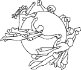

Burundi - Illegal Issues of Postage Stamps
|
 |
UNIVERSAL POSTAL UNION |
Berne, 15 April 2002 International Bureau Circular |
143 |
Dear Sir/Madam
The postal administration of BURUNDI asks me to inform you that the National Postal Authority (RNP) has just learned that fake postage stamps purportedly issued by Burundi are being manufactured and circulated.
The issue in question features six varieties of butterfly with the following face values: 100 F, 150 F, 200 F, 250 F, 300 F and 400 F.
The postal administration of Burundi has satisfied itself that these postage stamps are illegal and were never issued by the RNP. They have been issued in contravention of the Universal Postal Convention, the Letter Post Regulations and the legislation of the Republic of Burundi. Legal action has already been initiated to trace the forgers and bring them to justice.
Consequently, the Burundi administration asks all postal administrations not to accept mail items bearing these illegal stamps, and to help eliminate the marketing of these items, which are also without value to collectors of the country's stamps.
Yours faithfully,
K J S McKEOWN
Director of Communication and Postal Markets
More information about the illegal issues can be obtained directly from the UPU, Mrs. Maria Libera.
| Published: 04/26/02. Revised:
04/26/02. Copyright © 2002 by PWO and by Victor Manta, Switzerland. All rights reserved worldwide. |